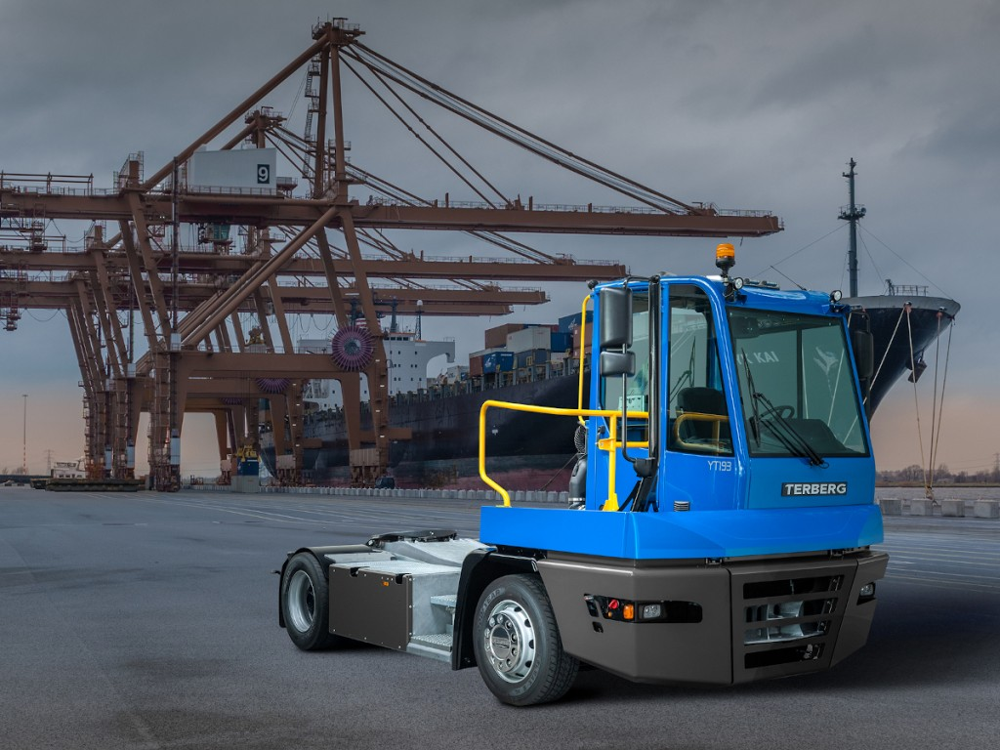

Presentatie
Bedrijfspresentatie
Terberg
Het bedrijf Terberg is in 1869 opgericht door Johannes Bernadus Terberg. Het bedrijf bouwde eerst militaire vrachtwagens om naar vrachtwagens voor de bouw. In 1973 brachten zij de eerste terminaltrekker uit en in 2010 opende het bedrijf een vestiging in Rotterdam.
Het bedrijf is nog steeds actief bezig met het ontwikkelen, modificeren en produceren van nieuwe vrachtwagens. Daarnaast is Terberg actief geweest met projecten zoals Quooker en Little C.
Download presentatie